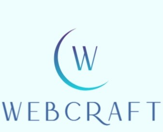

Websites and web systems built to grow your business
Your partner in building reliable, scalable, and secure web solutions tailored to your business needs.
We create:
Professional, responsive websites designed to represent your brand and work seamlessly across all devices.
Custom websites for small businesses including service pages, contact forms, and content sections that can grow over time.
Ongoing updates, backups, and technical support to keep your website secure and up to date.
Custom web-based tools to streamline your business operations, manage data, and improve efficiency.
Online booking systems for appointments, reservations, and service management.
Online stores with secure payment processing, product management, and customer accounts.
Tailored web solutions to meet unique business needs, from inventory management to customer relationship management.
We discuss your goals, target audience, and website needs.
We create a clear structure and design that matches your brand.
Your website is built using modern web technologies with performance and security in mind.
You review the site, request revisions, and approve the final version for launch.
We provide maintenance, updates, and future upgrades as your business grows.
WebCraft Studio is a web development studio focused on building clean, reliable, and scalable websites for businesses of all sizes. We believe a website should do more than look good — it should support business growth.
WebCraft Studio helps businesses establish a strong online presence and streamline operations through modern, secure, and scalable web solutions.
To become a trusted digital partner for small and growing businesses by providing reliable web solutions that evolve as their needs grow.
Websites that work consistently
Best practices to protect client data
Solutions that grow with your business
Simple, effective communication